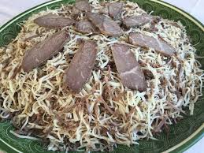
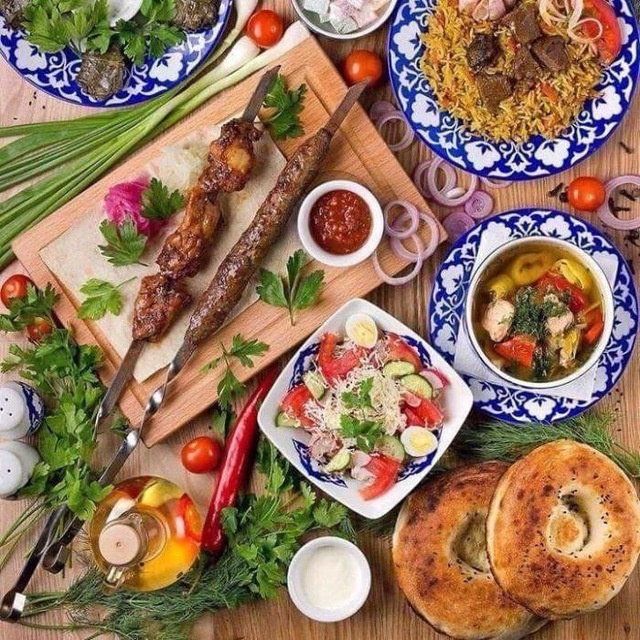
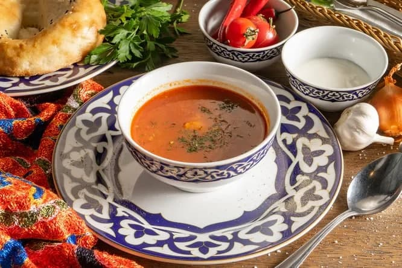
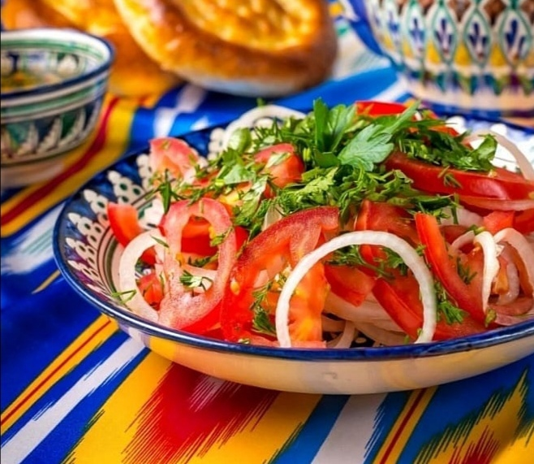

Osh
Ushbu taom juda ham qadimgi taomlardan biri boʻlib, kelib chiqish payti va joyi aniqlanishi qiyin hisoblanadi. Baʼzi manbalarga koʻra, palovning tayyorlanish uslubi II—III tashkil topib kelgan
Baliq
Ushbu taom juda ham qadimgi taomlardan biri boʻlib, kelib chiqish payti va joyi aniqlanishi qiyin hisoblanadi. Baʼzi manbalarga II—III tashkil topib kelgan

Qozon kavob
Ushbu taom juda ham qadimgi taomlardan biri boʻlib, kelib chiqish payti va joyi aniqlanishi qiyin hisoblanadi. Baʼzi manbalarga koʻra, palovning tayyorlanish uslubi eramizdan avvalgi II—III tashkil topib kelgan
Tokosh
Ushbu taom juda ham qadimgi taomlardan biri boʻlib, kelib chiqish payti va joyi aniqlanishi qiyin hisoblanadi. Baʼzi manbalarga koʻra, palovning tayyorlanish uslubi eramizdan avvalgi II—III tashkil topib kelgan
Surxandaryo norini
Toshkentda aziz mehmonni norin bilan siylashadi. Dasturxonda albatta bu taom bo‘lishi kerak.
ПодробнееSurxandaryo shashliklari
Qarorga muvofiq, 2019-yildan boshlab Toshkent xalqaro turizm yarmarkasi BMTning Butunjahon turizm tashkiloti ko‘magida har yili noyabr oyi uchinchi haftasining chorshanba-juma kunlari Toshkent shahrida o‘tkaziladi.
ПодробнееSurxandaryo shorvasi
Turkiyada uch yuzdan oshiq sho‘rva turi bor. Sho‘rva nafaqat tushlikka, balki nonushta va kechki ovqatga ham tayyorlanishi mumkin. Istanbulda mehmonlar dasturxoniga ham avval sho‘rva tortiladi.
ПодробнееSurxandaryo salati
Toshkentda aziz mehmonni norin bilan siylashadi. Dasturxonda albatta bu taom bo‘lishi kerak.
Подробнее